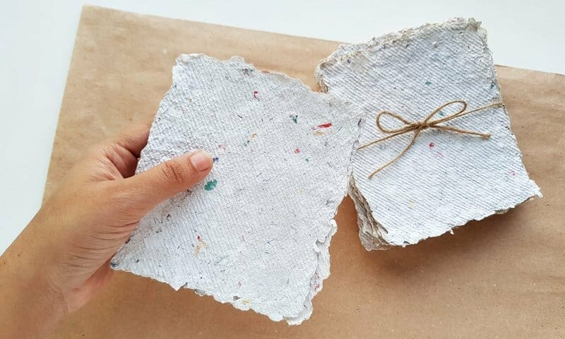
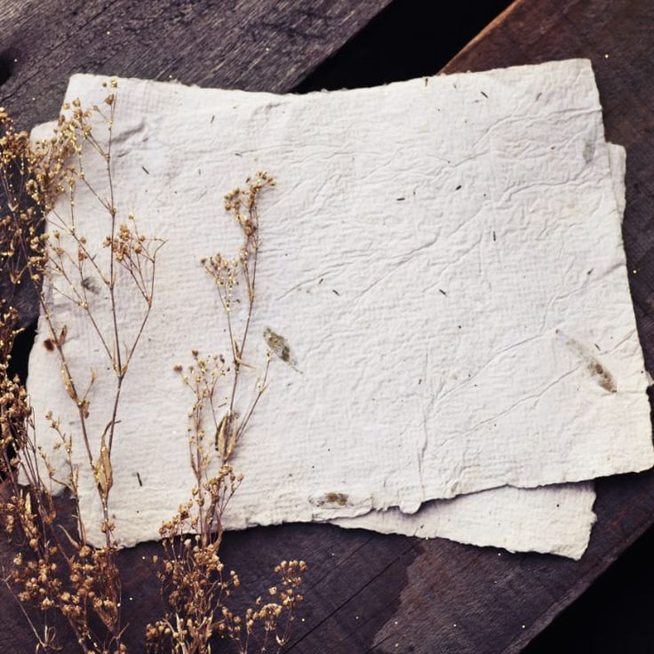
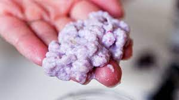
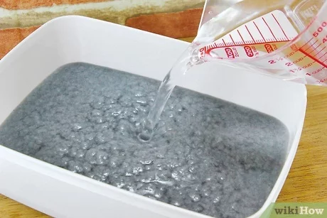
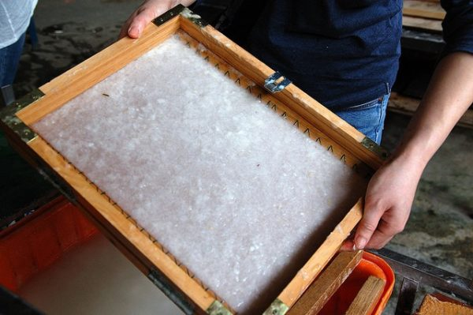
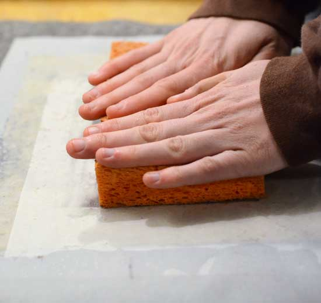
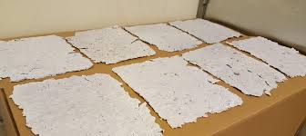

The paper making process

Why recycle paper?
The recycling of paper is the process by which waste paper is turned into new paper products.
Personally, I enjoy this type of recycling as it is very simple to do and allows my creativity to run wild with colours and textures.
More of a serious note, it has a number of important benefits too:
- It saves waste paper from occupying homes of people and producing methane as it breaks down
- Recycled paper use saves resources and reduces the paper industry's impact on the planet
- Recycled Paper creates 43% less water waste according to www.greenamerica.org

What you need to start making your own paper:
- Water
- Scraps of paper. I use egg cartons because we just have so many
- Plastic container to hold the water and paper pulp mixture
- Mould & Deckle (a screen attached to a frame) How to make a mould and deckle
- Sponge to absorb excess water
- Towels, wool blankets, cloth or other absorbent material
The steps to making recycled paper:
- Cut or rip up your paper into about 1 inch squares and soak your paper for a few hours or overnight.

- Blend the wet paper to make a pulp.

- Fill up the container with your blended pulp, about 1/3 to 1/2 way. The more pulp to water, the thicker your paper will be.

- Mix your water and pulp mixture and then, with you mold and deckle, start pulling some paper.

- transfer the wet sheet from the mould to a flat, absorbent surface using a sponge to absorb excess water and remove your deckle.

- Let the sheets of paper dry.

For my visual learners, here is an easy Youtube Tutorial